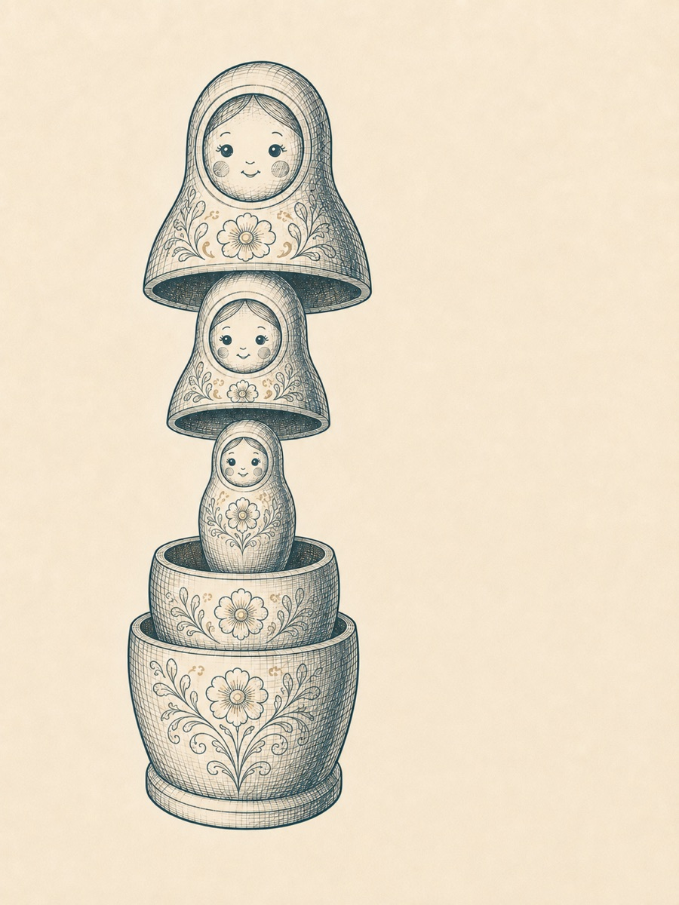

Надеюсь, ты делаешь перерывы в чтении и открываешь следующую главу со свежей головой (так себе каламбур вышел, ну какой есть).
Мы продолжим знакомиться с конструкцией «матрёшки», и у нас остались два её элемента, которые нужно всерьёз обсудить перед тем, как собрать конструкцию воедино: шеринг и рефлексия. Особенность этих двух элементов ровно в том, что именно про них зачастую напрочь забывают авторы курсов, а между тем их роль в эффективном обучении огромна! Почему, сейчас увидим.
Давай совершим уже знакомую нам мыслительную операцию – перейдём во 2 позицию к потенциальным студентам твоего курса: вот мы только что сделали упражнение, получили некоторый опыт (возможно, совершенно новый для себя!) — записали видео, отжались двенадцать раз, выполнили дыхательную практику, написали текст, потратили много физических и эмоциональных сил в ролевой игре…
Представляешь себя на месте студента: каково твоё состояние? Какие чувства ты испытываешь? В голове бурлит? Есть потребность обсудить полученный опыт, как бы «выгрузить» его из себя? Прояснить – что это было, как это было, получилось/не получилось и т.д.? Вот то-то и оно.
Определение
Собственно говоря, шеринг (от английского share — делиться) — это часть обучения, в которой ученик переводит только что полученный опыт в слова и делится тем, каким этот опыт для него оказался: сложным или лёгким, насколько он совпал с ожиданиями, инструкцией и полученной теорией, с чем пришлось столкнуться в процессе, что удивило, где возникло напряжение, пришлось ли где-то преодолевать себя и так далее.
02Почему это важно
Почему шеринг важен?
✦
Давай попробуем этот ответ сначала не понять, а прочувствовать. Вот минуту назад я попросил тебя переключиться во вторую позицию к своему будущему студенту и представить, что ты только что выполнил упражнение. Есть?
Теперь представь, что наставник, тренер или преподаватель вместо того, чтобы спросить у тебя хотя бы: «Ну как прошло?» — немедленно требует сделать ещё раз или вообще переходит к следующей теме.
Как ты это воспримешь?
Предположу, что ты как минимум можешь испытать некоторую обескураженность или растерянность, а может быть, даже раздражение. Подожди секунду, дорогой наставник. Неужели тебе совсем неинтересно, какие у меня впечатления, чувства и мысли от полученного опыта? Я всё-таки старался, что-то делал, с чем-то внутри себя разбирался — и мы что же, даже не обсудим, что произошло?
Впрочем, дело здесь не только в том, интересуется наставник внутренним процессом студента или нет. Безразличие и холодность в отношениях со студентами — тоже важная тема, мы до неё непременно доберёмся. Сейчас нас интересует другое.
Дело в том, что после окончания упражнения опыт не исчезает в ту секунду, когда мы закончили действие. У нас остаются впечатления, эмоциональные реакции, вопросы, недоумение, ощущение успеха или неуспеха, несовпадение между тем, что мы собирались сделать, и тем, что получилось на самом деле. Иногда всё это продолжает занимать внимание. А если опыт был эмоционально насыщенным или стрессовым, сильное возбуждение может мешать работе некоторых когнитивных функций — прежде всего рабочей памяти и когнитивной гибкости1.
1 Подробнее об этом – в исследовании Гранта Шилдса, Мелиссы Сазмы и Эндрю Йонелинаса, опубликованном в 2016 году.
03Назвать опыт
Слова превращают опыт в объект
✦
Слова в этот момент оказываются очень полезным человеческим изобретением. Когда я пытаюсь рассказать, что именно со мной сейчас произошло, мне приходится снова обратиться к собственным переживаниям и начать их разбирать: что было легко, а что трудно? Что я ожидал — и что получил? В какой момент потерялся? Что меня удивило? Где почувствовал сопротивление? Как сейчас себя чувствую?
Само превращение пережитого опыта в связное высказывание уже требует некоторой работы: из огромного количества ощущений, мыслей и впечатлений нужно выбрать существенное, различить одно от другого и хоть как-то назвать. И когда нам это удаётся, названный опыт, в свою очередь, становится доступнее для нашего собственного внимания.
Я уже не просто нахожусь внутри некоторой смутной смеси ощущений — я могу сказать: «Мне было страшно», «я всё время торопился», «я вообще не понял инструкцию», «я был уверен, что делаю правильно, а потом увидел совсем другой результат», «мне неожиданно понравилось то, чего я раньше избегал».
Это действительно очень важное свойство нашего языка: он позволяет нам вытащить отдельные фрагменты из общего потока переживаний, положить их перед собой (почти как предметы на стол!) — и сказать: ага, вот что сейчас со мной происходило. Другими словами, я получаю возможность на шаг отойти от собственного внутреннего процесса, «отцепить» полученный опыт от себя, сделать его объектом наблюдения и разбора. То, что я назвал и сделал объектом наблюдения – поддаётся управлению, корректировке и анализу. И ровно поэтому шеринг является настолько важной частью образовательного процесса.
Зафиксируем ещё раз
остановка после действия и осмысленное обращение к только что полученному опыту способны существенно усиливать глубину и качество обучения.
04Верх и низ куклы
Инструкция и шеринг должны совпадать
✦
И вот теперь мы переходим к самым, что ни на есть, структурным тонкостям. Сейчас, думаю, ты начнёшь понимать, почему «матрёшка» называется «матрёшкой». Давай вспомним ещё раз конструкцию реальной куклы, давшей нашей модели своё имя: у неё внутри сидит маленькая неделимая куколка (в нашем случае опыт), сверху её закрывает кукла среднего размера, которая в свою очередь прячется в большую. Вспомнил?

Схема 6. Устройство «матрёшки»
Отлично. Так вот, чтобы «матрёшка» у нас была исправная, а не поломанная, её верхняя и нижняя часть должны совпадать – согласен? То есть, возвращаясь к структуре нашей модели – концепт должен структурно и логически совпадать с рефлексией, а инструкция с шерингом. Про то, как должны соответствовать друг другу концепт и рефлексия, мы ещё поговорим, а сейчас разберёмся с инструкцией и шерингом.
Поехали, сразу с примером:
«Сейчас в течение 60 секунд ты записываешь на видео свою самопрезентацию по подготовленной модели» — то на шеринге мы должны спрашивать ровно о том, что сказали в инструкции: «Удалось ли сделать это за 60 секунд? С первого раза или нет? Насколько модель помогала или мешала? Удалось ли пройти по всем шагам модели? Каковы твои впечатления от первого опыта записи самопрезентации на камеру?»
Замечаешь? Я задаю в шеринге только те вопросы, которые непосредственно вытекают из той инструкции, которую я дал.
Я не спрашиваю: «А думал ли ты о том, что скажет твоя мама, когда ты эту самопрезентацию опубликуешь?»
Я не спрашиваю: «Насколько эта самопрезентация соответствует твоему личному бренду?»
Я не спрашиваю: «Чувствовал ли ты диафрагмальное дыхание в процессе речи?»
Я не спрашиваю: «Почувствовал ли ты, что стоя записывать видео удобнее, чем стоя?»
Почему? Потому что ни один из этих вопросов не имеет отношения к той инструкции, которую я дал.
Мог ли я сказать внутри инструкции: «во время записи видео наблюдай за тем, как именно ты дышишь, и стремись использовать только диафрагмальное дыхание?» Мог. И только в этом случае у меня было бы право задавать вопрос про дыхание во время шеринга.
В чём причина такого занудства? Причина в том, что любой новый опыт обладает почти безграничным числом новых объектов внимания, однако само человеческое внимание имеет ограниченную ёмкость. При этом, если я по-прежнему намерен выстроить процесс обучения максимально управляемым и предсказуемым, это МОЯ РАБОТА – направить перед упражнением внимание студента СТРОГО ТУДА, куда необходимо в рамках данной конкретной ступени обучения, чтобы навык формировался последовательно и корректно.
Давай я даже позволю себе ещё более радикальную формулировку:
Радикальная формулировка
обучать – значит направлять внимание ученика туда, куда диктуют текущие задачи обучения.
Если я этого не делаю, если даю во время инструкции одни фокусы внимания, а после практики во время шеринга спрашиваю про другие – я создаю путаницу в голове студента2.
2 А путаница влечёт растерянность, падение интереса и готовности к обучению. Поговорим об этом подробнее, когда дойдём до темы мотивации.
05Свинодевочка
«Свинодевочка»: верх от одной куклы, низ от другой
✦
В нашем методологическом сленге даже есть название этой путанице: «свинодевочка».
Схема 7. «Свинодевочка»
Что такое «свинодевочка»? Это когда открывающий элемент «матрёшки» не соответствует закрывающему и тогда в результате наша кукла приобретает вот такой странный вид: верх от одной матрёшки, низ от другой.
Ты можешь прямо сейчас спросить себя – что ты чувствуешь, когда смотришь вот на такую «неправильную» матрёшку? Обычно я слышу ответы: обескураженность, замешательство, недоумение. Или – говоря современным языком, кринж. ;Р
Запомни это чувство: именно его испытывают ученики с той или иной силой, когда тренер или автор курса у них на глазах сначала начинает про Фому, а заканчивает про Ерёму3.
В истории со «свинодевочкой» много тонкостей: она может прокрасться в твою речь незамеченной и даже проскочить мимо внимания студентов. Но негативное влияние на встраивание навыка она всё равно будет оказывать. Давай приведу несколько примеров таких неочевидных свинодевочек в инструкции-шеринге:
Инструкция
«Итак, сейчас мы будем работать в парах с закрытыми глазами. Пожалуйста, исследуйте свои телесные ощущения…»
Шеринг
«Что ж, давайте обсудим, чьи результаты наиболее правильны…»
Почему это «свинодевочка»? Потому что если в инструкции мы говорим «поисследуйте», это автоматически означает, что мы ожидаем совершенно любых результатов и совершенно не вправе делить их на правильные и неправильные.
Ещё вариант.
Инструкция
«Ваша задача в течение 3 минут обсуждать любую случайную тему со своим собеседником, при этом постоянно и непрерывно поддерживая зрительный контакт».
Шеринг
«Отлично, упражнение закончено: поделитесь тем, насколько структурированной была речь собеседника?»
Что здесь не так? Ну, очевидно – если задача была фокусироваться на поддержании зрительного контакта, то причём здесь структура речи?
Я предвкушаю твою определённую растерянность и мысли, что «это чересчур сложно и вообще невозможно удержать в голове»… Дружище. Поверь мне, во-первых, очень даже возможно. Во-вторых, когда мы соберём «матрёшку» целиком и увидим непосредственные связи между концептом – инструкцией – опытом – шерингом – рефлексией, всё станет гораздо более прозрачно.
Последнее замечание: на шеринге не нужно доставать из студентов вообще всё4. После упражнения про острые переговоры нам не нужно вытаскивать все переживания о том, кто кого в детстве обидел и у кого какие вскрылись по этому поводу травмы. В шеринге мы извлекаем только то, что имеет отношение к данной конкретной матрёшке: к ступени (или бусине, как тебе угодно) концепта, на котором находимся, и к инструкции, которую задали.
На этом пока остановимся с темой инструкции и шеринга. Пора выяснить – что такое рефлексия, а затем собрать «матрёшку» полностью.
3 Я никогда не забуду, как один профессор в моём родном Саратовском университете, читая лекции по истории политических учений, сводил любую тему либо к жидомасонскому заговору, либо к проклятиям в адрес «Мишки-меченого» – так профессор называл последнего президента СССР М. С. Горбачёва. В общем, не будьте, как этот профессор.
4 Есть тренеры, которые сильно грешат неструктурированными и безграничными шерингами, когда группа в какой-то момент вообще перестаёт понимать, как это многочасовое обсуждение связано с темой блока/практикой/тренингом… Чтоб этого не допускать, нам и нужны «матрёшки», лестница навыков и все прочие структурные инструменты.
06Что такое рефлексия
Рефлексия: выводы и мостик в будущее
✦
После того как мы «выгрузили» необходимый нам пласт эмоций и наблюдений по поводу прошедшей только что практики, наступает очередь закрывающего элемента «матрёшки»: рефлексии.
Определение
Рефлексия — это рациональные выводы, в ней студент с нашей помощью отвечает себе на очень важные вопросы: что для меня означает полученный опыт, какие выводы я из него извлеку, как я дальше буду этим пользоваться, как применю в своей жизни.
Ещё раз – медленно и внимательно проводим различие.
Шеринг – это ответы на вопросы: «что со мной происходило во время упражнения? Каким для меня был этот опыт? Что я почувствовал, что заметил, с чем встретился?»
Рефлексия – это ответы на вопросы: «какие выводы из этого опыта я могу извлечь? что я теперь буду с ними делать? На какую полочку я всё это положу? Применимо ли это в моей жизни? Если применимо, то как именно?»
Шеринг в большей степени – про эмоции и чувства от процесса упражнения. Рефлексия – про рациональные выводы по его окончании + привязка этих выводов к настоящей и будущей жизни студента.
И одновременно с этим, рефлексия служит связкой между одной «матрёшкой» и другой (вспомни наши бусы): выводы, закрывающие одну бусину — это всегда переход к следующей бусине, к следующему элементу концепта. Или (если тебе удобнее лестница) — рефлексия в финале одной ступени превращается в логический переход к следующей5.
Ключевая мысль
Рефлексия закрепляет полученный опыт, помогает разложить его по полочкам, осмыслить и рационализировать. Если мы дали студентам концепт, инструкцию, опыт и даже поделились впечатлениями от него, но не отрефлексировали — «матрёшка» остаётся незакрытой: человек может забыть, о чём были предыдущие 40 минут, может начать испытывать недоумение и раздражение («а что это вообще было и зачем?»), а может сделать какие-то выводы… Но какие…? И к чему эти выводы приведут…?6
Ещё раз повторю: очень частая проблема большого количества курсов — отсутствие шеринга и рефлексии как таковых. И это одна из причин, почему выпускники таких программ часто не демонстрируют по итогам программы особенных изменений в навыках. Ничего удивительного: шеринг и рефлексия крайне важные элементы обучения, создающие закрепление полученного опыта и встраивание навыка.
Но, давай же на очень узнаваемом жизненном примере рассмотрим, почему шеринг и рефлексия так существенно различаются между собой и почему они стоят именно в этой последовательности.
5 Станет ещё яснее, если ты вспомнишь TOTE: Exit одного TOTE означает переход к T1 следующего. Рефлексия выполняет роль сверки между T1 и T2 и помогает принять решение: идём дальше или возвращаемся на повторный цикл.
6 На эту тему есть старый анекдот: – Привет, дорогая! Я сегодня не смогу к тебе приехать. Что будешь делать? – Выводы.
07Ночь на кухне
Почему их нельзя менять местами
✦
История из жизни
Думаю, у каждого из нас была ситуация, когда мы помогали другу или подруге пережить боль расставания. Представь: друг приходит к тебе посреди ночи в растрёпанных чувствах, вы сидите на кухне — и он следующие 2-3 часа, обливаясь слезами, выгружает всё, что произошло: «Да ты не понимаешь! Да я ему/ей!.. Да она/он мне!.. Да как он/она могла! Да им вообще доверять нельзя!»
А теперь проверочный вопрос. Представь, что в самом начале страстной исповеди друга ты ему скажешь: «Ну хорошо, давай же мы с тобой поймём — какие выводы полезно извлечь из этой ситуации?» Как думаешь, что он ответит?
Я думаю, особо темпераментный друг может и послать. И будет прав: «Да какие выводы?! Ты что, не видишь, что со мной происходит? Ты меня выслушай сначала!»
Если мы хорошие друзья, мы будем сначала долго слушать, гладить по ручке, кивать, подливать чаю (или чего покрепче, это уж как пойдёт) — и ждать, когда он выговорит всё. И вот когда это произойдёт, друг умоется и выдохнет, можно сказать: «Да, я понял. Очень тебе сочувствую. Ну и что будешь делать дальше? Есть ли мысли, как теперь строить свою жизнь?» …
И только в этой точке другу могут начать приходить крайне полезные для жизни выводы: «Пожалуй, надо сделать перерыв… может быть, к психотерапевту сходить… а то, кажется, я в какую-то свою травму попал…» И так далее.
Человек в состоянии отрефлексировать даже очень болезненный опыт при условии, что до этого у него было пространство для шеринга. Важный момент: наоборот — не работает.
Шеринг и рефлексию ни в коем случае нельзя менять местами. Шеринг работает на то, чтобы человек снизил эмоциональный заряд своего состояния через называние и проговаривание своего опыта и чувств, чтобы вслед за этим в прояснившейся голове возникло свободное пространство и готовность заполнять его рациональными выводами.
Только когда градус напряжения снизился, когда закипающая вода осела и человек задышал ровнее — он способен к осмыслению и построению связей полученного опыта с будущим: что я приобрёл и что понял, что делать дальше, какие новые модели поведения мне нужны. Вот что такое шеринг и рефлексия на уровне нашей ежедневной бытовой жизни. В обучении логика устроена ровно так же и ровно в этой же последовательности: сначала шеринг, потом рефлексия.
08Какие вопросы задавать
Вопросы шеринга и вопросы рефлексии
✦
Что ж, вот теперь, когда мы провели достаточно внятное разграничение между этими двумя форматами коммуникации с учениками после упражнения, давай совсем наглядно разберём: какие вопросы задавать студентам на шеринге, а какие — на рефлексии.
Примеры вопросов для шеринга
Что с тобой происходило в процессе упражнения?
Поделись, насколько сложным было для тебя задание?
Что далось легко, что вызвало затруднения?
Какие чувства ты испытывал в процессе?
Как ты отреагировал, когда произошло то-то и то-то?
Что помогло тебе добиться результата? Что помешало?
Был ли этот опыт похож на предыдущий?
Насколько он совпал с тем, что ты ожидал увидеть/услышать/почувствовать?
Хватило ли отведённого времени?
Удобно ли было пользоваться инструментом?
Как ты себя чувствуешь сейчас?
Примеры вопросов для рефлексии
Как ты оцениваешь полученные результаты? Что они для тебя значат?
К каким выводам этот опыт тебя приводит?
Какие мысли в связи с этим у тебя возникают?
Можем ли мы подтвердить гипотезу, которую заявили перед упражнением?
Насколько полезно то, что ты только что освоил?
Где и как это можно применить в твоей жизни? Что тебе для этого нужно?
Когда и как ты намерен это сделать в ближайшее время?
Теперь, важный дисклеймер: эти примеры – не являются шаблоном, который можно взять и бездумно применять! Их смысл – показать тебе структурную разницу в том, как лингвистически устроены вопросы для шеринга и рефлексии.
09Разбор ошибки
Когда не сходятся концепт и рефлексия
✦
Ты можешь меня спросить: «Чудесно, а как же я пойму, какие конкретно вопросы мне задавать?» Ура! Это очень своевременный вопрос, потому что он подводит нас к важнейшему финальному разговору о том, как конструируется «матрёшка» целиком, как она «открывается» и «закрывается».
Ты уже знаком с феноменом «свинодевочки» – мы рассматривали, что происходит, когда инструкция не сходится с шерингом. Надо сказать, что «свинодевочка» может успешно возникать, когда такие «нескладухи» происходят между концептом и рефлексией или же между концептом и инструкцией, или вообще между любыми элементами «матрёшки». Давай приведём примеры того, как это может быть.
Как НЕ надо
В концепте ведущий говорит: «Итак, проверим, насколько опыт выступления перед камерой субъективно отличается от опыта выступления перед живой аудиторией». Инструкция: «Для этого, дорогие участники, пожалуйста, запишите самопрезентацию таймингом до 60 секунд на камеру своего смартфона по модели, которую мы обсуждали ранее».
Студенты записывают видео, и по окончании практики ведущий внезапно говорит: «Как ты считаешь, если бы твой бизнес-партнёр сейчас был здесь, что бы он почувствовал после того, что ты сказал о своей компании?» У студента в голове: при чём здесь мой бизнес-партнёр, мы же занимались чем-то совершенно другим?!
И вслед за этим на рефлексии ведущий заявляет: «Что ж, надеюсь, все из вас сделали вывод, что самопрезентация необходима для формирования личного бренда!» И естественным образом в головах учеников начинает что-то взрываться: чтоооо??? Откуда мы взяли этот вывод??? Какое он имеет отношение к разнице между камерой и живым выступлением?!?!?!
Я ещё раз хочу здесь сфокусировать твоё внимание вот, на чём: феномен «свинодевочки» очень честно и безжалостно отвечает нам на вопрос «откуда в большом количестве случаев возникает сопротивление и неудобное поведение студентов?» И ответ этот звучит так: зачастую это не студенты «глупые» или «ленивые». Это мы своей мыслительной и речевой неряшливостью создаём в их головах когнитивный диссонанс, который в свою очередь запускает их сомнения в интеллектуальных способностях ведущего курса, которые они до поры до времени могут держать в себе, но в какой-то момент могут и высказать, причём в довольно грубой форме. Но, про коммуникацию со студентами мы ещё поговорим в следующих главах. А пока давай рассмотрим корректный вариант «матрёшки»: без «свинодевочки».
Как можно вместо этого
Формулируя концепт, ведущий уже держит в голове, к каким конкретно выводам ему необходимо привести группу учеников. Если цель «матрёшки» выявить субъективные различия между живым выступлением и опытом работы перед камерой, то ровно на это тренер будет направлять внимание студентов перед упражнением и ровно об этом же спрашивать: «Итак, друзья, сейчас в процессе записи самопрезентации на камеру, пожалуйста, наблюдайте за своим состоянием, потому что по окончании практики мы обязательно обсудим – как оно отличалось от предыдущего опыта работы с живой аудиторией».
И тогда, по окончании упражнения, ведущий спросит: «Поделитесь своими наблюдениями: что вы заметили в своём состоянии, когда говорили о себе на камеру?»
А рефлексия, в свою очередь, будет строиться вокруг вопросов: «Какие различия между живым выступлением и работой в кадре мы можем выделить?» и «Что эти различия нам дают? Какие выводы каждый из вас для себя может сделать относительно будущих случаев, когда вам будет необходимо записывать говорящие видео? Нужна ли вам какая-то специальная подготовка? Что необходимо будет учесть?» и т.д.
10Четыре вопроса
Как собирать матрёшку по шагам
✦
Итого. Когда ты будешь проектировать свою первую матрёшку (а это уже очень скоро произойдёт, я надеюсь ;Р), тебе нужно держать в голове несколько вопросов:
Чему конкретно люди должны научиться в рамках именно этой, отдельной взятой «матрёшки»?
К каким выводам концепта нужно привести студентов на этапе рефлексии?
Какую практику им лучше всего предложить для того, чтобы они могли сделать именно эти, необходимые нам выводы?
Какие условия и фокусы внимания нужно соблюсти в инструкции к практике, чтобы выводы естественным образом вытекали из шеринга после упражнения?
Алгоритм по шагам будет выглядеть так: ты берёшь свою лестницу навыков (или бусы), выбираешь одну конкретную бусину (или ступень лестницы) и для начала собираешь внешнюю часть «матрёшки»: концепт и рефлексию. Какой вопрос мы здесь поднимаем? Как на него отвечаем? Какой элемент навыка исследуем? К каким выводам должны прийти? После этого можно переходить к сборке инструкции и шеринга: какой именно опыт нашим студентам здесь необходим? Какие именно наблюдения, находки, переживания, впечатления мы будем из этого опыта извлекать?
Схема 8
Сборка «матрёшки» по частям
Что показать
Чертёж: пять элементов матрёшки в разобранном виде — концепт, инструкция, опыт, шеринг, рефлексия
У каждого элемента подписан свой вопрос: что в концепте, что в рефлексии, что в инструкции, что в шеринге, что в опыте
Стрелки сборки: как половины насаживаются друг на друга — концепт с рефлексией, инструкция с шерингом, внутри опыт
Горизонтальная · пропорция ≈ 3:2 · ← здесь автор просил иллюстрацию-чертёж
И да, отвечать на эти вопросы нужно очень дотошно и с ювелирной точностью, потому что именно здесь мы закладываем те самые управляемость и предсказуемость всего процесса обучения.
11Думать матрёшками
Когда матрёшка закрывается
✦
Немного воодушевляющих перспектив: когда ты с этим разберёшься (а ты непременно разберёшься, уверяю тебя, это очень интуитивно понятная и логически ясная модель, которую может освоить любой взрослый человек), ты вполне вероятно начнёшь думать «матрёшками» — и видеть, что происходит в окружающем мире, когда матрёшки открываются и не закрываются7. Ты будешь смотреть кино и сериалы и видеть, что мощные, мастерски собранные картины отличаются именно тем, что если какую-то «матрёшку» открыли в начале, то она обязательно где-нибудь в финале закроется, причём самым неожиданным образом8.
Ты будешь читать книги, смотреть спектакли, слушать качественную музыку — и везде встречать этот принцип. В симфонии тоже можно услышать: если тему открыли в начале, её обязательно закроют в финале, чтобы у слушателя возникало ощущение гармонии: «О! Разрешилось! Всё встало на свои места».
Вот это тот самый эффект, который создают закрытые «матрёшки» в обучении: пазл встал на своё место в общей картине, ура! Можно делать следующий шаг.
Именно мастерство сборки «матрёшек» помогает нам построить программу, которая будет приводить к формированию комплексного навыка. Шаг за шагом, ступень за ступенью, «матрёшку» за «матрёшкой» мы будем «укладывать слоями» будущий навык в сознание наших учеников, чтобы в финале прийти к точке, где они реально смогут самостоятельно проделать именно то, что мы пообещали перед началом обучения.
Грамотное владение навыком построения «матрёшек» позволяет достигать предсказуемых, управляемых результатов и делать так, чтобы люди по окончании курса рассказывали: господи, как это всё было последовательно, как внятно, и как всё разложилось по полочкам к концу.
Что ж, друг мой. Мы прокопали с тобой одну из важнейших тем нашей книги; мы с тобой теперь понимаем всю логику построения с нуля обучающей программы – от замысла, целей и образа будущего студента до технологии формирования навыка. Впереди у нас не менее интересный разговор о том, что начинает происходить, когда программа, написанная на бумаге, встречается с реальными людьми, их опытом, обратной связью и т.д.
И прежде, чем переходить к этому разговору, конечно же, я хочу, чтобы ты получил собственный опыт сборки «матрёшки». Практика ниже тебе в этом поможет. До встречи в следующей части книги!
7 Я это не придумал: об этом мне прямым текстом говорят выпускники «Тренинга тренеров» и курса «Методология Fundamentum».
8 В сценарном мастерстве это называется «арка персонажа» или «арка сюжета».
12Практика
Рабочая тетрадь
Собери свою первую матрёшку целиком
1. Возьми инструкцию и упражнение, которые ты прописал в прошлом разделе, помести их в матрёшку и пропиши концепт со связкой-входом: как мы здесь оказались, откуда пришли — «мы рассматриваем вот эту тему и дошли до вопроса…» И проверь, что внутри есть ответы для китайских принцесс: зачем это и почему именно сейчас.
2. Проверь инструкцию по пяти вопросам: кто делает, что делает, как именно, при помощи чего, в течение какого времени.
3. Письменно — это важно сделать именно письменно — распиши вопросы для шеринга, которые подходят именно к этому упражнению и закрывают именно эту инструкцию: какие вопросы о полученном опыте и чувствах нужно задать, чтобы у человека возникла связь между тем, что он делал, и тем, что получил.
4. Затем пропиши вопросы для рефлексии: на какие полочки раскладывается полученный опыт, чему мы научились, какие гипотезы из концепта подтвердили, какую технологию отработали, что наисследовали.
5. Самопроверка. Прочитай свои вопросы к шерингу и мысленно ответь на них из позиции студента: получается ли рассказ о том, «как это со мной было»? Теперь прочитай вопросы к рефлексии: появляется ли внутри чувство «да, я понял, про что это было, мне понятно, какое это имеет ко мне отношение, я понимаю, что с этим делать»?
6. Пройдись по собранной конструкции ещё раз и отметь, где всё слажено, а где возникает опасность «свинодевочки» — на какие части матрёшки нужно обратить особое внимание.
Вопросы вместе с твоими ответами скопируются в буфер — вставь их в свой документ.
Собирай спокойненько, плавненько, без истерик и без попытки сделать идеально с первого раза. Мы разобрались, наверное, с самым сложным элементом, который в нашем методологическом деле существует — мозг сильнее всего закипает именно на матрёшках. Очень важный критерий того, что матрёшка закрылась: «я готов двигаться дальше». Так что можно промокнуть лоб, выдохнуть — и идти играть в этот конструктор. Необходимый минимум, чтобы идти и делать, у тебя точно уже есть.